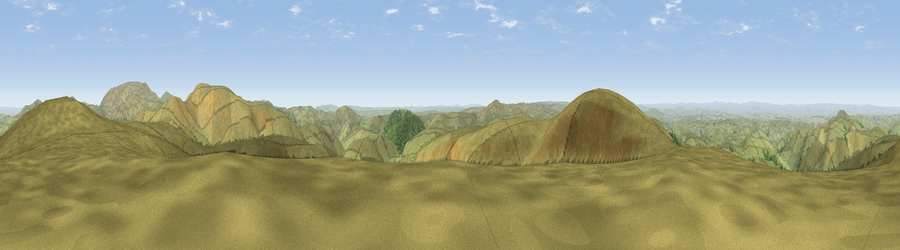

Viewpoint c12293_7655
#3417 in England · top 14% of its area beats it · —The view, rendered

A 360° render of this exact spot computed from the terrain model, tree cover and land cover — summer colours, afternoon light, calibrated against photographs of famous viewpoints. Real trees, hedges and buildings will differ in detail.
The panorama
Grey silhouette: terrain skyline in each direction (720 bearings, Earth curvature and refraction included). Dashed green: skyline with trees (+15 m) and buildings (+8 m) as obstacles. Blue strip: how far the ground is visible on each bearing.
Where the view opens
Wedge length = distance to the farthest visible ground on that bearing (vegetation-aware). Rings at 10, 25 and 50 km.
What fills the view
94% grassland · 4% woodland · 2% cropland
Angular shares of the visible panorama (visual magnitude), not map area. Landscape diversity 0.12 (0–1 Shannon).
Key numbers
More beautiful places nearby
The staircase of upgrades: each row has a higher view potential than everything closer. Driving times are estimates from straight-line distance, calibrated against real road routing — check an actual route before setting out.
| Place | Direction | Drive | Score |
|---|---|---|---|
| Mozie Law | NNE · 0 km | ~1 min | 76.0 |
| Windy Gyle | E · 3 km | ~7 min | 79.7 |
| Viewpoint c12386_7791 | ENE · 8 km | ~16 min | 80.8 |
| The Schil | NNE · 9 km | ~17 min | 81.0 |
| West Hill | NE · 9 km | ~18 min | 81.3 |
| Viewpoint c12273_7856 | E · 10 km | ~20 min | 83.7 |
| Viewpoint c12396_7887 | ENE · 13 km | ~24 min | 85.7 |
| Viewpoint near Kirknewton | NE · 18 km | ~31 min | 86.1 |
55.42612, -2.27450 · source: screening · position refined by local search. Computed location — check access rights before visiting.